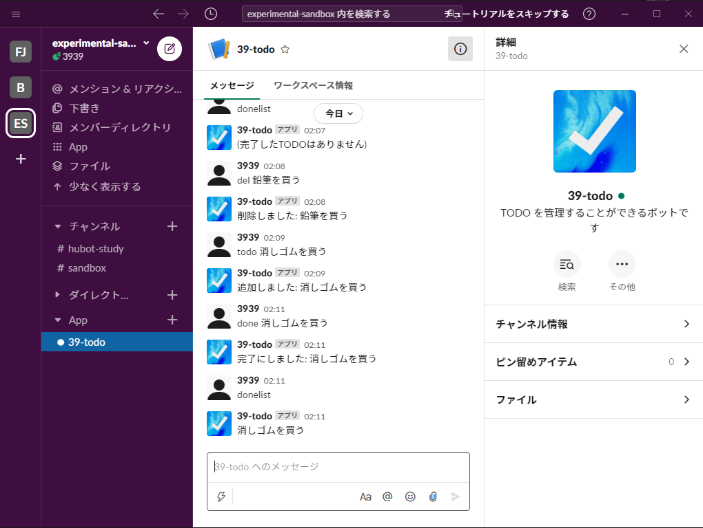

Slackといわれるチャットツールで使用することができるチャットボットを作りました。
5つのコマンドでTODOリストを管理することができるシンプルなbotです。
ボット名（39-todo）に続いてコマンドを入力することで操作することが出来ます。
ボット名 todo - TODO を作成
ボット名 done - TODO を完了にする
ボット名 del - TODO を消す
ボット名 list - TODO の一覧表示
ボット名 donelist - 完了した TODO の一覧表示
